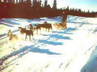
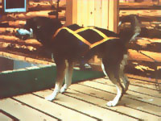
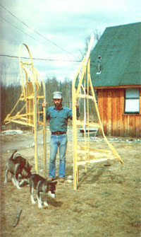

Homesteading Dog Sledding
November/December 1979
Alfred Agree says the best transportation for the snowbound "ruralite" is...

Blanchie-Alfred Agree's lead dog-keeps her towline stretched out tight even when shes "on hold" waiting for the musher's next command.

The fishback sled harness is the best all-around dog "strapper" for both freighting and distance running.

The two most popular dog sleds are the standard lightweight model-on the left-and the eight-foot freighter. The hefty freighter can haul 500 Pounds of cargo-and a musher-but requires the pulling Power of at least five strong sled dogs. Both snowriders are equipped with front bumpers (called "brush bows " by sled drivers).

A musher's view of a run in South Central Alaska's Talkeetna Range on a beautiful cloudless morning. Alfreds sled team can pull him as far as 60 miles in a single day!
PHOTOS SUPPLIED BY THE AUTHOR
DOG SLED RESOURCES
Here are some sources of dog-sleddin' hardware and information:
LITERATURE
Mush: The Beginner's Manual of Sled Dog Training (Arner Publications, Dept. TMEN, P.O. Box 307, Westmoreland, New York 13490) edited by Bela Levorsen, 250-page hard cover, $9.95 postpaid.
Training and Racing Sled Dogs (also Arner Publications) by George Attla, 205-page hard cover, $11.95 postpaid.
Racing Alaskan Sled Dogs (Alaska Northwest Publishing Company, Dept. TMEN, 130 Second Avenue South, Edmonds, Washington 98020), 133-page paperback. $7.95 plus 75c shipping and handling.
Team & Trail Mushers Monthly News (Dept. TMEN, Center Harbor, New Hampshire 03226), a 20+-page publication. A one-year subscription is $12.50, or send 75c if you'd like to see a sample copy.
CLUB
International Sled Dog Racing Association, 460 South 43rd, Boulder, Colorado 80803 (write for detaiIs).
EQUIPMENT:
Write for a brochure or catalog to:
Rae's Harness Shop, Dept. TMEN, Box 10-693, Anchorage, Alaska 99511.
Frank Hall, Dept. TMEN, 5875 McCrum Road, Jackson, Michigan 49201.
Tun-Dra, Dept. TMEN, 16438 96th Avenue, Nunica, Michigan 49448.
Edward L. Moody, Dept. TMEN, 216 Milton Road, Rochester, New Hampsh ire 03867.
Blanchard's Sled Shop, Dept. TMEN, Hatchers' Pass, Willow, Alaska 99688.
Here in Alaska, folks who need to travel in winter often end up "going to the dogs"... and loving it. After all, canine-powered snow-going is an enjoyable mode of transportation (dogs are a lot friendlier than are jeeps or snowmobiles), and dog sledding can be downright practical, besides. I often make 60 miles a day with my five-member team, for example, and also use dog sleds to haul lumber, groceries, firewood-and more-out to my rural homestead.
If you live in an area that's snowbound during part of the year, you can take advantage of dog power, too. You'll have to secure good gear and beasts-and take the time to properly train your pullers-but you'll find that the rewards of sleddin' will be well worth the effort.
CHOOSING YOUR WORK DOGS
Regardless of its breed, however, a good sled dog must have an obedient temperament. Many fine teams have been formed around a family pet whose devotion to its owner sets a fine example for the others. Another character trait to look for in a potential puller is an ability to get along with its peers. Infighting simply cannot be tolerated in a sled team.
When you set out to form a group of "tundra trekkers", you'll obviously have to decide how many dogs to get. I've seen impressive teams consisting of as many as 20 canines, but I'd suggest you start out with just three. Many novice mushers (we Alaskans call such amateurs cheechakos) quickly find that trying to handle and train more than three dogs can be a most confusing-and frustrating-task.
After you gain some experience, you'll likely want to add one or two more tail waggers to the team. Just be sure that any untrained beasts undergo a five-day "getting acquainted" period with the other dogs before being trained for harness. And remember: Never tolerate the slightest show of aggressive behavior from those new critters or, for that matter, from any of your dogs. You will pay dearly if you let them get away with such methods of "showing their enthusiasm": As we say in Alaska, vet bills are the medals of the cheechako!
SLEDS AND SLEDGES
Besides getting-and training-some dogs, you'll need a sled (or a "freight" sledge) and a set of harnesses and lines. Commercially available sleds are pretty much standardized (the classic "Alaskan gold rush model" is widely used) and can be obtained through the equipment shops listed in this article's sidebar. An eight-foot snow runner makes the best all-around sled for work and play, and can cost you anywhere from $150 to $750. The wooden load luggers come in two basic styles: The popular standard sled can-with the help of three dogs-transport one person and five bags of groceries, while the larger capacity freighter holds a 500-pound payload (not including the "musher") but does require a minimum of five strong dogs.
All store-bought sleds come "shoed" with some form of plastic runner (the build- it-yourselfer will find that less expensive sheet tin works almost as well) and all such snow-contacting surfaces should be coated with a special friction-fighting compound called P-Tex (available from sledding equipment suppliers). The sleds are also equipped with a brush bow ... which is an expendable "front bumper" (this piece of equipment will often get smashed in the course of a season) that protects your sled from structural damage when you meet up with the unusual-but famous-winter tree that "pops up out of nowhere".
The easy-to-build sledge (called a comitik by the Eskimos) is an even better hauling device than is the "classic" freighter sled. This flat slider consists of little more than a platform attached to a set of runners, and can be easily put together out of 2 X 8's and plywood. I've used my homebuilt comitik extensively and find it perfect for hauling lumber and materials to remote cabin sites.
Most ready-made sleds have a couple of hooked braking devices ... but the experienced dog sledder normally uses a dragging foot and a verbal command to stop the vehicle. A veteran musher won't trust a brake hook to keep a harnessed sled "parked", either ... but instead trains the team always to lie down when the dogs are not pulling. (The cheechako will undoubtedly endure-at least once-the unenviable experience of being left behind as his or her team and sled disappear over a hill.)
HARNESS AND LINES
Of course, well-trained dogs and a nicely built sled won't do you much good unless you have some means for "getting the two together" . . . that is, some lines and harnesses. Each dog should have a properly fitting body yoke (these are available for around $10 to $12 each from the same firms that supply sleds). I use the versatile "fishback" harness on my dogs, because it's comfortable and well suited to fast travel.
Your animals will also need strong collars ... so they can be "staked out" on the dog lot. These "necklaces" also secure the lines that keep your "sled steeds" parallel to the central line. Let me emphasize, however, that a dog should never be made to pull from his collar alone! A "tail line" -running from the back of the harness to the central tow line -should bear that stress.
Tail and neck ropes are usually 1/2' thick, while the central tow cord will have a 5/8" diameter ... and all lines should be made from braidednot twisted-nylon. Attachments can then be sewn through the strands of such cord with a large plastic needle known as a "fid" . . . and you'll be able to make easy line adjustments in the field without going through the finger chilling hassle of untying frozen knots.
TRAIN, TRAIN, TRAIN
Proper sled-dog training takes a lot of time but is a vitally important task. Start -one animal at a time-by acquainting the beast with the feel of its tote gear. Treat this harnessing act seriously so your critter won't think you're playing around ... and then take the animal out for a normal leash walk, hooking your line from the back of the harness on your "return trip".
Use subsequent walks to teach commands. Be consistent in your choice of command words and the tone of voice you use. Most dogs will quickly learn "HIKE" (or "MUSH" or "GET UP", if you prefer), "WHOA", and "STAY". But only the smartest canines will respond to the turning commands, "GEE" (right) and "HAW" (left).
The most obedient of your dogs should receive special treatment (to develop "lead dog mentality") and extensive geehaw training as well. Don't choose the biggest, toughest brute for your pack guide, but select instead the quick-reflexed critter (often a female) that will follow your commands without balking. A good leader is indispensable for dog sledding ... so spend a lot of time training this animal. (Often, the foremost position is shared by two critters. This arrangement is particularly useful for training a second leader who could fill in should your "main mastiff" become disabled.)
In a full 'I set" the first two dogs behind the leader are called "swing dogs" . . . because of their ability to turn the team. The pair of pullers just in front of the sled are the "wheel dogs" and are usually the strongest canines in the group. (Some dogs shy away from the wheel position-and yours will if you're not careful to keep the sled from sliding into the critters-but it is a nicely visible spot for training a newcomer.) Any additional pullers are harnessed between the swing and wheel pairs and known as team dogs.
ON, YOU HUSKIES!
The actual amount of work you can get out of your dogs will be determined by endless variables ... including the animals' experience and fitness, trail conditions, the size of your load, the weather, and so forth. Most of the dog-caused delays and difficulties (fighting, tangling, etc.) will occur during training and, even then, probably only take place within the first few miles on the trail.
My five "ace" dogs have often carried me over 60 miles in a day, but it will probably take several months of training and practice before your quintet can be expected to make more than 40 (an average speed of six to seven miles per hour is quite good for a team in its first season). I pace my pullers-on long trips-by traveling at a sustainable 8-10 MPH . . . and giving the dogs a half-hour rest after every two hours of work.
Most dogs enjoy being out on the trail and will give you everything they've got, so don't constantly berate your pullers (only cheechakos yell commands just to hear themselves talk) ... the dogs don't like being shouted at any more than you would. Oh, you'll have an occasional, obvious laggard ... but good training will make physical punishment unnecessary for most dogs. I never use or even carry a whip. (Don't hesitate, though, to get rid of the "bad apple" who won't respond after being given a fair chance.)
If one of your dogs slows down considerably while on the trail, you may have to "basket" the animal ... that is, tie it into the sled. (You should be prepared for this-and other minor mishaps-by always carrying some spare short cords and snaps.) If you do have to basket a pooch, be sure to check its paws for cuts. In some conditions- especially when you're sledding over icy, broken trailsit may be necessary to "boot" all your dogs. Foot protectors can be made from denim and fastened in place with masking tape. Keep an eye out for bad trail conditions so you can boot your beasts before they begin to limp!
There're lots more sledding tips for a beginning musher to learn, but most of them are either common sense or the kind of knowledge that's best picked up as you go along ... so I guess I should sign off now. However, I would like to remind you of the most important rule for training and working dogs: Never give a command that your pullers are incapable of following ... or one that you're not prepared to enforce! Follow this, and you'll all have a doggone good time!
Good mushing with your team! And by the way, if you're sledding out to the Nome gold fields sometime and happen to pass through the Susitna Valley ... stop in and say hello!
|
 Blanchie?Alfred Agree's lead dog?keeps her towline stretched out tight even when shes ""on hold"" waiting for the musher's next command. |
 The fishback sled harness is the best all-around dog ""strapper"" for both freighting and distance running. |
 The two most popular dog sleds are the standard lightweight model-on the left-and the eight-foot freighter. The hefty freighter can haul 500 Pounds of cargo-and a musher?but requires the pulling Power of at least five strong sled dogs. Both snowriders are equipped with front bumpers (called ""brush bows "" by sled drivers). |
 A musher's view of a run in South Central Alaska's Talkeetna Range on a beautiful cloudless morning. Alfreds sled team can pull him as far as 60 miles in a single day! |
|
|